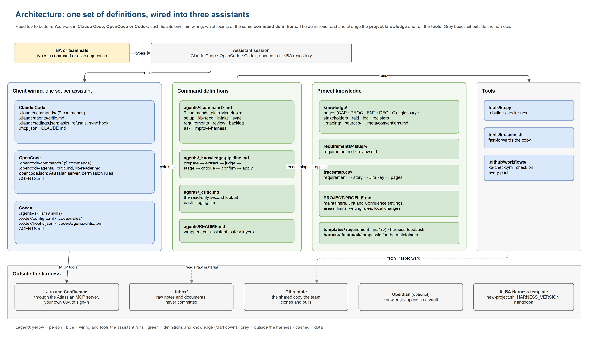
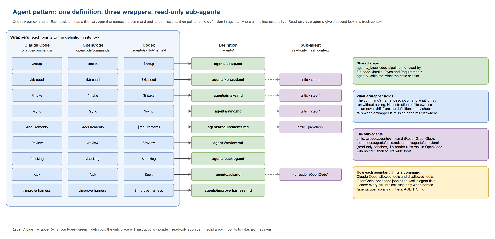
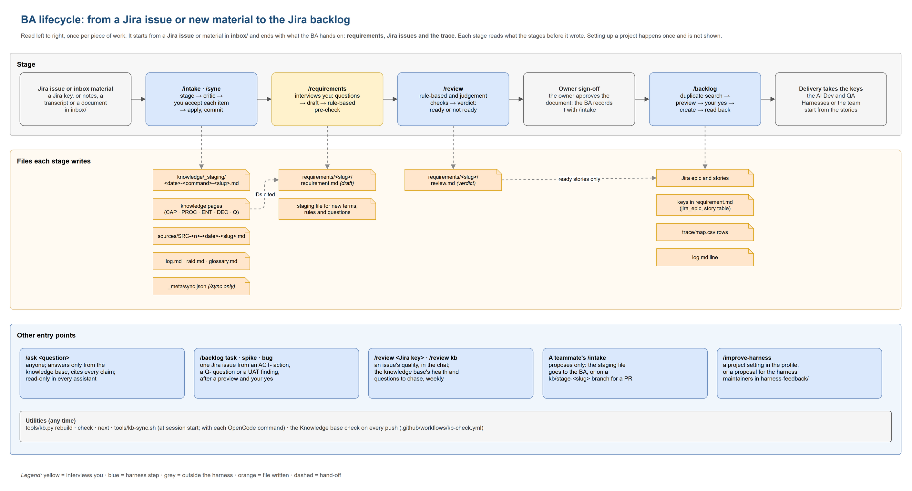
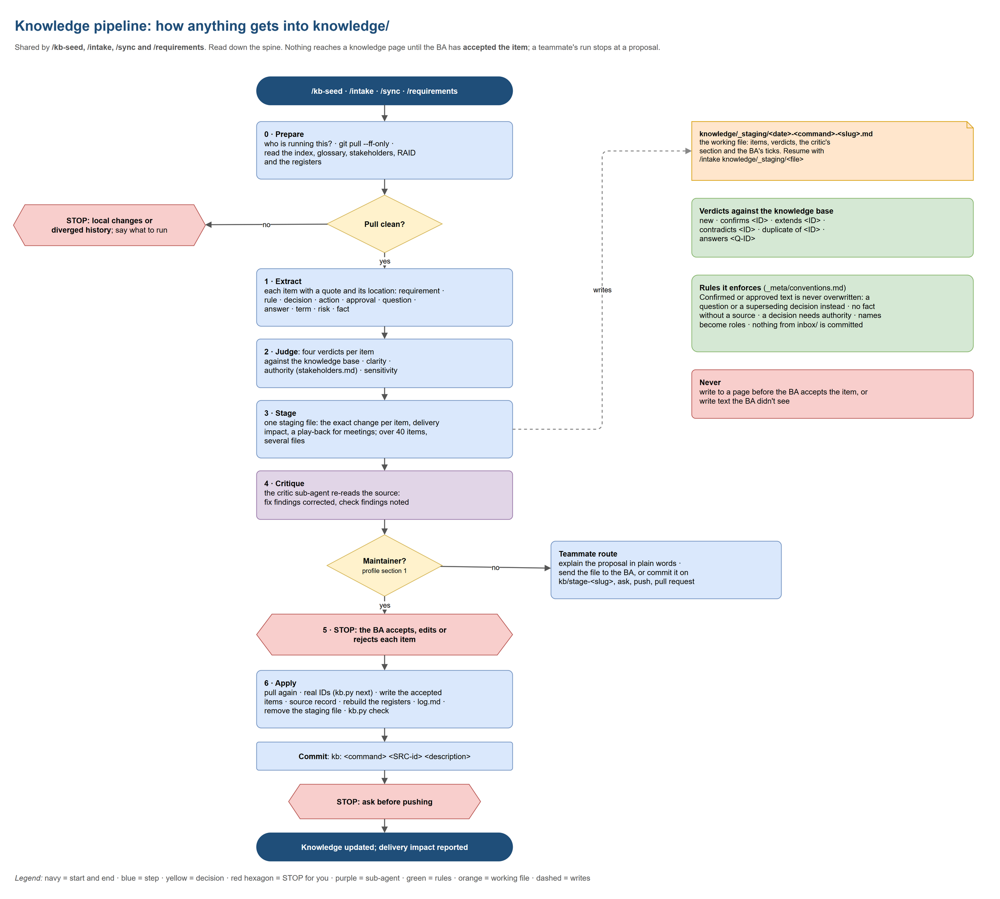
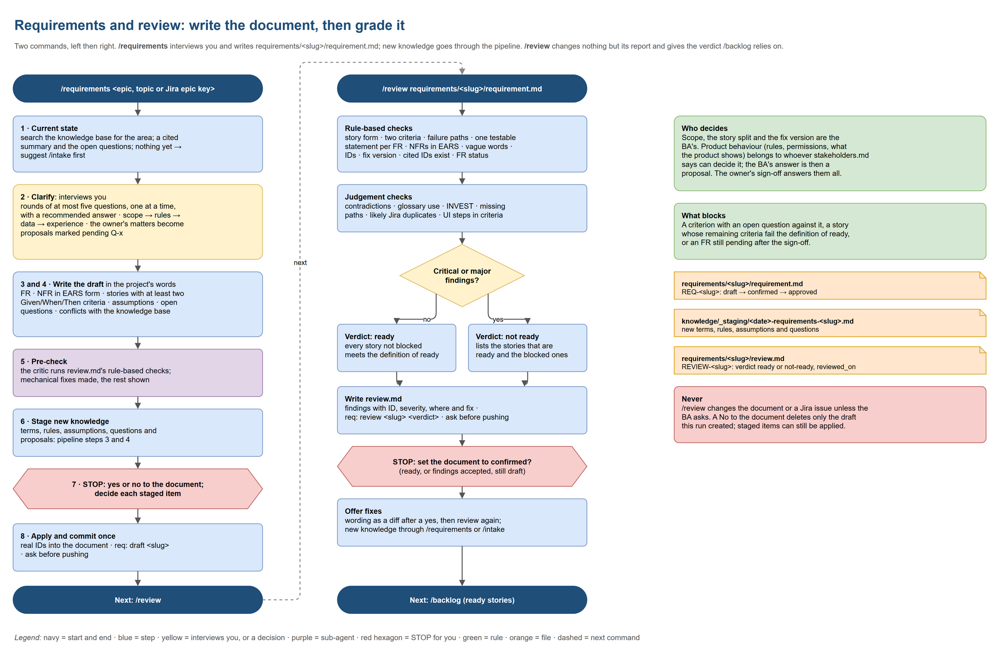
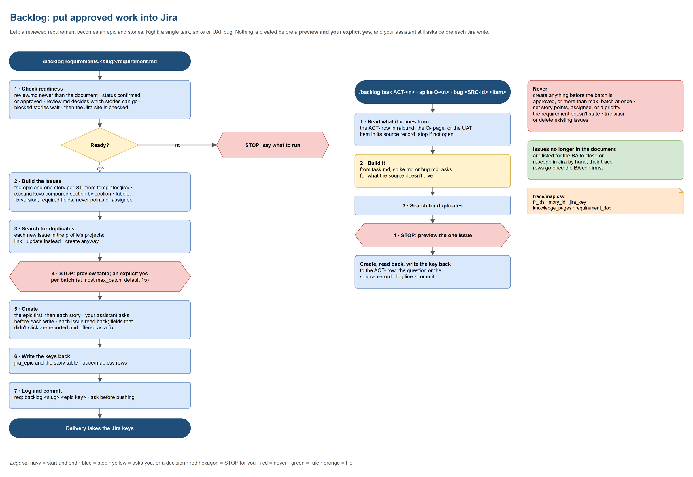
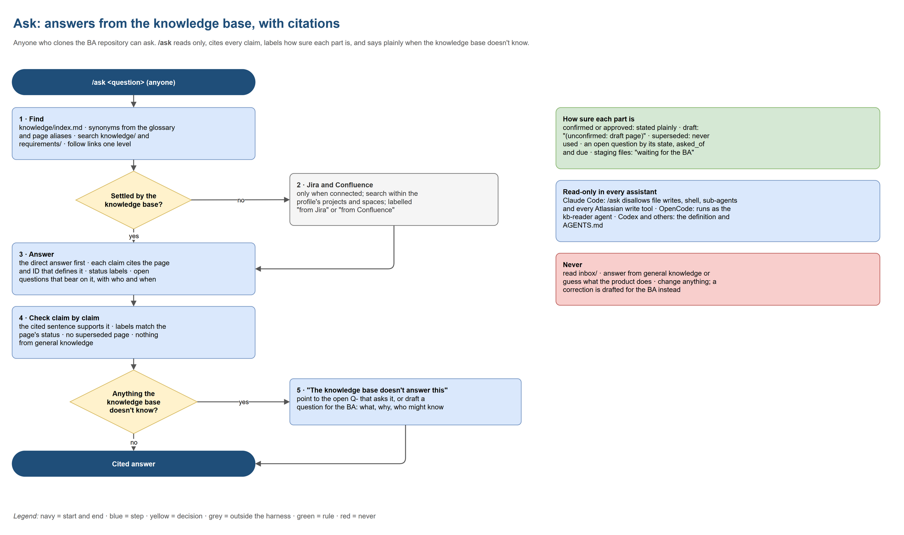
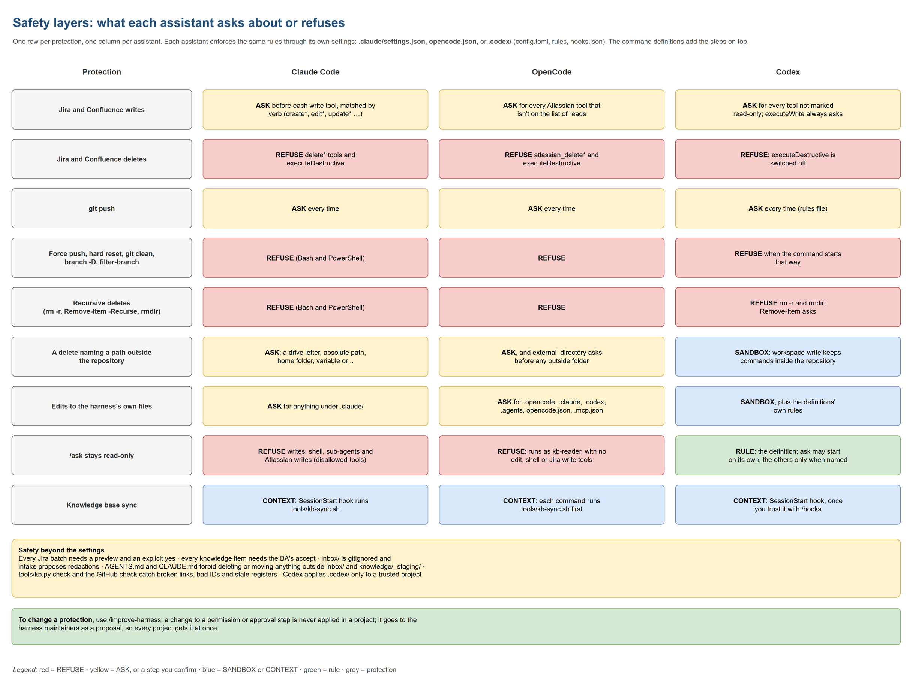
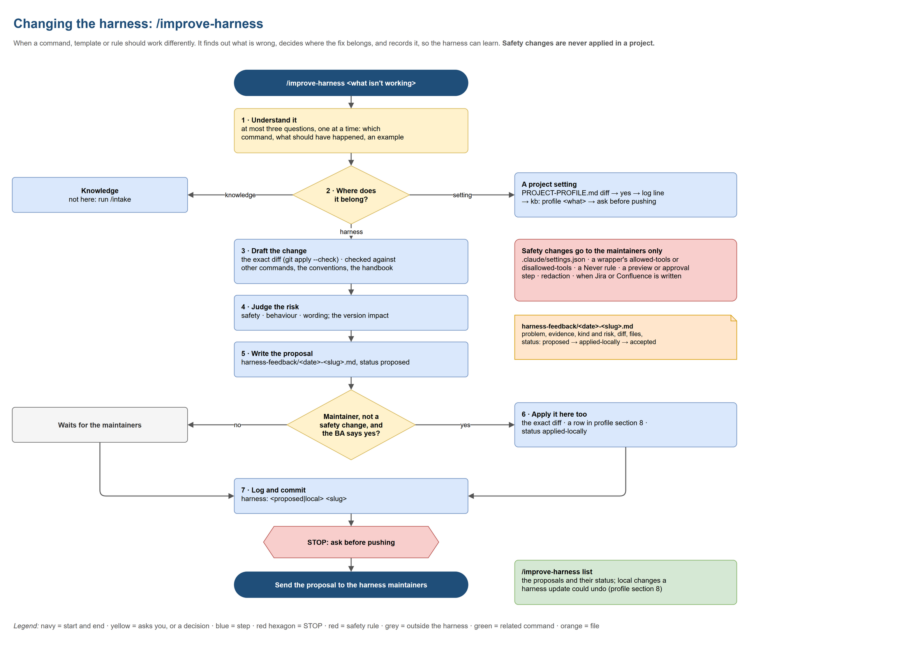

How the AI BA Harness works
The AI BA Harness gives business analysts a way of working with an AI assistant on one project's knowledge. It has nine commands, a knowledge base kept as plain Markdown, fixed steps that stop for the BA's decision before anything is stored or sent to Jira, and safety settings for each assistant it runs in: Claude Code, OpenCode and Codex. Each part of the system has a diagram below.
The guide is for business analysts who run the commands, teammates who ask the knowledge base questions, and whoever maintains the harness. The command definitions live in project/agents/, the knowledge base rules in project/knowledge/_meta/conventions.md, and the setup steps in SETUP.md. The BA handbook, ../index.html, has a worked example of every command; this guide shows how the pieces fit together. All the diagrams come from one multi-page draw.io file, diagrams/ai-ba-harness/ai-ba-harness.drawio (see Updating the diagrams).
1.Architecture: definitions, wiring and knowledge


A project gets its own BA repository, created from this template with scripts/new-project.sh. Everything in that repository comes from project/. You open your assistant in the repository and type a command. The assistant's wiring finds the command and points it at its definition in agents/, which holds all the instructions. The definition reads the knowledge base, stages changes for you to accept, writes what you accept, and runs the tools.
| Part | Folder or file | Holds | Who runs it |
|---|---|---|---|
| Command definitions | agents/ | The nine commands, the shared knowledge pipeline and the critic, in plain Markdown | Read by the assistant; the only place with instructions |
| Wiring for each assistant | .claude/, .opencode/ and opencode.json, .agents/skills/ and .codex/ | The thin wrappers, the read-only sub-agents and each assistant's safety settings | Each assistant loads its own |
| Project knowledge | knowledge/, requirements/, trace/, PROJECT-PROFILE.md, templates/, harness-feedback/ | What the project knows, the requirement documents, the trace from requirement to Jira, the project's settings | Written only through the commands, after your accept |
| Tools | tools/, .github/workflows/ | The knowledge base tool, the sync script and the check that runs on every push | The commands, the session start, and the git host |
| Root files | CLAUDE.md, AGENTS.md, .mcp.json, HARNESS_VERSION | Guidance for Claude Code and for every other assistant, the Atlassian server, the template version | Loaded into each session |
The project knowledge:
| Path | Purpose |
|---|---|
knowledge/ | Pages for capabilities, processes, entities, decisions and questions; the glossary, stakeholders, RAID log and change log; the generated index and registers |
knowledge/_staging/ | Proposed changes waiting for the BA's decision, one file per input |
knowledge/sources/ | One source record per input: a redacted summary, what it changed, what was rejected and why |
knowledge/_meta/ | The conventions every command follows, the page templates, and sync.json, the place /sync reached |
requirements/<slug>/ | requirement.md, written by /requirements, and review.md, written by /review |
trace/map.csv | One row per story: its requirements, Jira key, knowledge pages and requirement document |
PROJECT-PROFILE.md | Eight sections: project and maintainers, Atlassian, Jira conventions, business areas, settings, material for /kb-seed, writing rules, local harness changes |
templates/ | The requirement document, the five Jira issue types (epic, story, task, spike, bug) and the harness feedback proposal |
harness-feedback/ | Proposals for the harness maintainers, written by /improve-harness |
inbox/ | Raw notes, transcripts and documents. Git ignores everything in it, so nothing raw is ever committed |
The wiring for each assistant:
| Assistant | Commands | Read-only sub-agents | Settings |
|---|---|---|---|
| Claude Code | .claude/commands/, run as /intake | .claude/agents/critic.md | .claude/settings.json, .mcp.json, CLAUDE.md |
| OpenCode | .opencode/commands/, run as /intake | .opencode/agents/: critic.md and kb-reader.md | opencode.json, AGENTS.md |
| Codex | .agents/skills/, run as $intake | .codex/agents/critic.toml | .codex/config.toml, .codex/rules/, .codex/hooks.json, AGENTS.md |
| Any other | None; you ask it to "run intake" by name | None | AGENTS.md |
Jira and Confluence are reached through the Atlassian MCP server (https://mcp.atlassian.com/v2/mcp), signed in as you with OAuth: /mcp in Claude Code, opencode mcp auth atlassian in OpenCode, codex mcp login atlassian in Codex. No token is stored in the repository. When the server isn't connected, /setup records your answers as "not verified", /review reports the Jira duplicate check as not run, and /ask answers from the knowledge base alone. /sync and /backlog need the connection and stop without it.
2.Agent pattern: one definition, three wrappers


A command is defined once and wired into each assistant:
- The definition,
agents/<command>.md, holds every instruction: what to read first, the steps, the report and the list of things never to do. It is plain Markdown that any assistant can follow. - Each assistant has a wrapper that names the command, gives its description and what it may run without asking, and points to the definition. The wrapper carries no instructions of its own, so it can't drift from the definition.
python tools/kb.py checkfails when a command has no wrapper in an assistant's folder, or when a wrapper points somewhere else. - Four commands share
_knowledge-pipeline.md:/kb-seed,/intake,/syncand/requirements. All of them put knowledge into the knowledge base the same way. - The read-only
criticsub-agent follows_critic.md. The pipeline starts it at step 4 to check each staging file, and/requirementsstarts it for its pre-check. When an assistant has no sub-agents, the same checks run as a separate second pass.
How each assistant limits a command:
- In Claude Code, each wrapper's
allowed-toolspre-approves only the reads and git commands that command needs./askalso lists every write, shell, sub-agent and Atlassian write tool underdisallowed-tools. Thecriticsub-agent has onlyRead,GrepandGlob. - In OpenCode,
opencode.jsonholds the rules for every command./askruns as thekb-readeragent, which has no edit, shell, sub-agent or Jira write tools. OpenCode also reads the Codex skills in.agents/skills/, soopencode.jsonblocks them there and the commands run only as/commands. - In Codex, each skill except
askhasagents/openai.yamlset so that it runs only when you name it. Thecriticagent runs in a read-only sandbox. - Any other assistant follows
AGENTS.md, which lists the commands and the rules to keep where nothing enforces them.
3.The BA lifecycle


The lifecycle runs once for each piece of work. Setting up a project (new-project.sh, /setup, the first /kb-seed) happens once and isn't part of it. The standard path:
Jira issue, or notes or a document in inbox/
/intake <inbox file> or /sync → knowledge/_staging/<date>-<command>-<slug>.md, then the accepted
knowledge pages, sources/SRC-<n>-<date>-<slug>.md, log.md
(and _meta/sync.json for /sync)
/requirements <epic or topic> → requirements/<slug>/requirement.md (draft), a staging file for
new terms, rules and questions
/review requirements/<slug>/requirement.md
→ requirements/<slug>/review.md with the verdict
… owner sign-off: the owner approves the document; the BA records it with /intake …
/backlog requirements/<slug>/requirement.md
→ the Jira epic and stories, the keys in requirement.md,
rows in trace/map.csv, a log.md line
… delivery: the AI Dev and QA Harnesses, or the team, start from the Jira stories …How the stages connect:
- You decide at every step that changes something. Each item a command proposes waits for your accept, edit or reject.
/requirementsasks its questions one at a time and waits for a yes to the document./backlogshows a preview and waits for an explicit yes before it creates anything, and your assistant asks again before each Jira write. /requirementsstarts from what the knowledge base already says and cites its rules, decisions and questions by ID. If the knowledge base has nothing on the area, it suggests an/intakeof existing material first./backlogtakes only the storiesreview.mdlists as ready, and needsreview.mdto be newer than the document. A sign-off approves the content, not its quality, so it never overrides the review.- The owner signs off outside the harness. When the sign-off arrives, for example as an email saved in
inbox/,/intakerecords it: the document becomesapproved, and every proposal it was waiting on becomes an answered question and a rule. /backlogwrites each story's Jira key into the document andtrace/map.csv. When/synclater sees a traced story reach Done, it proposes bringing what the story delivered into the knowledge pages.
There are other ways in. Anyone can run /ask to get an answer with citations. /backlog task, spike or bug turns a single action, question or UAT finding into one Jira issue. /review also takes a Jira key, or kb for a weekly health check of the knowledge base. A teammate's /intake proposes but can't decide, and its staging file goes to the BA or onto a kb/stage-<slug> branch for a pull request. /improve-harness changes how the harness itself works.
4.The knowledge pipeline


The pipeline is _knowledge-pipeline.md, and the rules it enforces are in conventions.md. /kb-seed, /intake, /sync and /requirements all run it.
When it runs:
- It first asks who is running it, if that isn't clear. Only the maintainers listed in profile section 1 apply changes. Anyone else follows the teammate route: the proposal is explained in plain words and handed to the BA, or committed on a
kb/stage-<slug>branch for a pull request. - It pulls first (
git pull --ff-only) and stops if that fails, so nothing is staged against an old copy. - Extract takes every item from the input with an exact quote and where it was found: a file and bullet, a transcript time, a Jira key and comment number, or a Confluence page and section.
- Judge gives each item four verdicts. Against the knowledge base it is new, confirms, extends, contradicts, a duplicate, or answers a question. It also gets a clarity verdict (vague words come from profile section 7), an authority verdict from
stakeholders.md(can this person decide it?) and a sensitivity verdict (what to redact). - Stage writes one file to
knowledge/_staging/with the exact change for every item, including the whole text of any new page. Items that change an existing page also list the requirements, stories and Jira keys that rely on it. Meetings get a play-back message the BA can send to the participants. - The critic re-reads the source and checks the staging file against it and the knowledge base. The command corrects what the critic marks
fixand leaves itscheckfindings for you. - At the STOP you accept, edit or reject each item, by ticking boxes in the file or in the chat. Every decision is written into the staging file before anything is applied.
- Apply gives the real IDs (
python tools/kb.py next), writes exactly what you accepted, writes the source record, rebuilds the index and registers, adds alog.mdline, removes the staging file and runspython tools/kb.py check. It commits askb: <command> <SRC-id> <description>and asks before pushing. - Confirmed or approved text is never overwritten. A contradiction becomes a question, and a change by someone who can decide it becomes a decision that supersedes the old rule.
- To decide later or on another machine, commit the staging file and resume with
/intake knowledge/_staging/<file>. It re-checks what changed in the knowledge base since.
/sync feeds the pipeline from Jira and Confluence. It reads what changed since last_synced in knowledge/_meta/sync.json, keeps answers, decisions, changes, terms, status changes with business meaning and delivered work, and moves last_synced only after you have decided every item. /kb-seed feeds it from the existing material listed in profile section 6, which it reads in place and never changes.
5.Requirements and review (/requirements, /review)


The commands are requirements.md and review.md, and the document follows templates/requirement.md.
When you run /requirements:
- It takes an epic name, a topic or a Jira epic key, and starts with a cited summary of what the knowledge base says about the area and the open questions that touch it.
- It decides what it can from the knowledge base, states small gaps as assumptions, and asks the rest in rounds of at most five questions, one at a time, each with a recommended answer. Scope comes first, then rules and permissions, then data, then the user's experience.
- Scope, the story split and the fix version are yours to settle. Product behaviour belongs to whoever
stakeholders.mdsays can decide it. When that isn't you, your answer becomes a proposal: a question to the owner, with the requirement marked "pending Q-x" until the owner's sign-off answers them all at once. - The draft has functional requirements, non-functional requirements in EARS form with a measure, user stories with at least two Given/When/Then criteria including a failure or permission path, assumptions, open questions and any conflicts with the knowledge base.
- The critic's pre-check runs the rule-based checks from
review.mdand fixes what is mechanical. It gives no verdict. - New terms, rules, assumptions and questions are staged through the pipeline. You say yes or no to the document and decide each staged item, and it commits everything once as
req: draft <slug>. A no deletes only the draft this run created.
When you run /review:
- It changes nothing but its report. Rule-based checks run first (the story form, two criteria, one testable statement per requirement, EARS, vague words, IDs, the fix version, cited IDs that exist), then judgement checks (contradictions, glossary use, INVEST, missing paths, likely Jira duplicates, UI steps in criteria).
- The verdict is ready when there are no critical or major findings. Either way it lists the stories that are ready and the blocked ones with their questions.
- For a document it writes
requirements/<slug>/review.mdand commits it asreq: review <slug> <verdict>. For a Jira key the report stays in the chat./review kbrunstools/kb.py check, the judgement checks no script can do, a message per role with the questions to chase, and a rebuild of the index and registers. - If the document is ready and still a draft, it asks whether to set it to
confirmed, the status/backlogneeds.
6.Backlog (/backlog)


The command is backlog.md, with the issue templates in templates/jira/.
When you run it on a requirement:
- It checks readiness before it touches Jira:
review.mdmust be newer than the document, and the document must beconfirmedorapproved.review.mddecides which stories can go; stories with a blocking question wait. - It builds the epic and one story per
ST-from the templates, with the labels, the fix version and every field Jira requires. Story points and assignee stay empty, and priority is set only when the requirement states one. - Issues that already have a key are compared section by section, and a change is proposed as a diff. A key whose story left the document is never transitioned or deleted; it is listed for you to close in Jira by hand.
- It searches Jira for duplicates of each new issue and offers to link, to update the existing issue instead, or to create anyway.
- The preview shows every issue with its action and fields, in batches of at most
max_batch(default 15). Nothing is created before your explicit yes for the batch. - It creates the epic first and then each story, reads every issue back, and reports any field that didn't stick with an offer to fix it. Then it writes the keys into the document and
trace/map.csv, adds alog.mdline and commits asreq: backlog <slug> <epic key>.
/backlog task ACT-<n>, spike Q-<n> and bug <SRC-id> <item> create one issue from an action in raid.md, an open question, or a UAT finding recorded by /intake, after the same duplicate search and a preview, and write the key back to where it came from.
7.Ask (/ask)


The command is ask.md. CLAUDE.md and AGENTS.md tell every assistant to answer any project question this way, whether or not the person typed /ask.
When you ask:
- It starts from
knowledge/index.md, widens the search with the glossary's other names and page aliases, and searchesknowledge/andrequirements/. It never readsinbox/. - It reads Jira and Confluence only when the knowledge base doesn't settle the question, or the question is about delivery status, and labels what it found there as "from Jira" or "from Confluence".
- Every claim cites the page and ID that defines it. Confirmed and approved content is stated plainly, draft content is marked "(unconfirmed: draft page)", and superseded content is never used.
- Before answering, it checks each claim against the sentence on the cited page and drops anything from general knowledge.
- When the knowledge base doesn't know, it says so and points to the open question that already asks it, or drafts one you can send to the BA.
8.Safety layers


Each assistant enforces the same protections through its own settings: .claude/settings.json for Claude Code, opencode.json for OpenCode, and .codex/config.toml with .codex/rules/ba-harness.rules and .codex/hooks.json for Codex. agents/README.md explains the layers.
| Protection | Claude Code | OpenCode | Codex |
|---|---|---|---|
| Jira and Confluence writes | Asks before each write tool, matched by verb | Asks for every Atlassian tool that isn't a listed read | Asks for every tool not marked read-only; executeWrite always asks |
| Jira and Confluence deletes | Refused | Refused | Refused: executeDestructive is switched off |
git push | Asks | Asks | Asks |
Force push, hard reset, git clean, branch -D, filter-branch | Refused | Refused | Refused when the command starts that way |
| Recursive deletes | Refused | Refused | Refused for rm -r and rmdir; Remove-Item asks |
| A delete naming a path outside the repository | Asks | Asks; external_directory asks before any outside folder | The sandbox keeps commands inside the repository |
| Edits to the harness's own files | Asks for .claude/ | Asks for the harness folders, opencode.json and .mcp.json | The sandbox, and the definitions' rules |
/ask | Refused writes, shell, sub-agents and Atlassian writes | Runs as kb-reader, with no write tools | Follows the definition |
| Knowledge base sync | The SessionStart hook runs tools/kb-sync.sh | Each command runs it first | The SessionStart hook, once you trust it with /hooks |
The rules match commands as assistants normally write them, so only the narrow git commands each command needs run without asking, and anything unusual prompts. Codex applies the .codex/ settings only to a trusted project.
Other safeguards:
- Every Jira batch needs a preview and an explicit yes, and every knowledge item needs the BA's accept.
inbox/is ignored by git, and/intakeproposes removing names, contact details and other personal data before anything is stored.CLAUDE.mdandAGENTS.mdforbid deleting or moving anything outsideinbox/andknowledge/_staging/, recursive deletes, and touching.git. When a script or command refuses, the assistant stops and asks.python tools/kb.py check, and the Knowledge base check on every push, catch broken links, bad properties, unknown or duplicate IDs, stale registers and missing wrappers.new-project.shonly adds files, in a new folder.
To change a protection, use /improve-harness. A change to a permission or approval step is never applied in a project; it goes to the harness maintainers.
9.Changing the harness (/improve-harness)


The command is improve-harness.md:
- It asks at most three questions, one at a time: which command, what should have happened, and an example.
- It decides where the fix belongs. A project setting goes into
PROJECT-PROFILE.mdafter a yes. Knowledge goes through/intake. Anything else is a harness change. - It writes the exact change as a diff and checks it against the other commands, the conventions and the handbook.
- It judges the risk: a safety change, a behaviour change, or a wording change, with the version impact.
- It writes the proposal to
harness-feedback/<date>-<slug>.mdfromtemplates/harness-feedback.md. - It applies the change locally only when you maintain the repository, the change isn't a safety change, and you say yes. A local change is recorded in profile section 8, so a later harness update doesn't silently undo it.
- It commits as
harness: <proposed|local> <slug>and asks before pushing. You send the proposal to the harness maintainers.
A safety change touches whether, when or with what approval the harness writes anything: the settings, a wrapper's tool grants, a "Never" rule, a preview or approval step, redaction, or when Jira or Confluence is written. Those are never applied in a project. /improve-harness list shows the proposals and the local changes a harness update could undo.
For the maintainers, SETUP.md describes taking a proposal into the template and updating a project to a new harness version.
10.Concepts that apply everywhere
- Pages, rules and terms are
draft,confirmed,approvedorsuperseded. Confirmed means a BA checked the item against its source; approved means someone with authority decided or signed it off. Questions have astateinstead, open or answered. Requirement documents use the same four statuses. - Every item has a stable ID with three digits (
CAP-,PROC-,ENT-,DEC-,Q-,SRC-,BR-,T-, the RAID prefixes andACT-), and an ID is never reused. Staging files use provisional IDs such asCAP-new-1;python tools/kb.py nextgives the real number when an item is applied. - Every fact cites the source record it came from. A fact with no source becomes an open question or a stated assumption.
stakeholders.mdrecords what each role can decide, with a RACI for recurring decisions. A statement from someone who can't decide it is recorded as their view, with a question to the owner.PROJECT-PROFILE.mdholds everything specific to the project: the maintainers, the Jira and Confluence settings, the business areas, limits such asmax_batch, the vague words and preferred terms, and local harness changes.tools/kb-sync.shonly fast-forwards your copy, never overwrites your work, and says what to run when it can't. Switch it off withkb_auto_sync: offin profile section 5.knowledge/index.mdand the three registers are generated bypython tools/kb.py rebuildand never edited by hand.- The
knowledge/folder opens as an Obsidian vault. Links stay in standard Markdown, so the pages read the same on GitHub and in any editor.
11.Which command do I use?
| I want to… | Claude Code or OpenCode | Codex |
|---|---|---|
| Configure a new BA repository, once | /setup | $setup |
| Build the first knowledge base from existing material | /kb-seed | $kb-seed |
| Turn notes, a transcript or a document into proposed knowledge | /intake inbox/<file> | $intake inbox/<file> |
| Bring new Jira and Confluence activity in | /sync | $sync |
| Write the requirement document for an epic or topic | /requirements <epic> | $requirements <epic> |
| Check a document, a Jira issue or the knowledge base | /review <path, key or kb> | $review <path, key or kb> |
| Put approved stories into Jira | /backlog requirements/<slug>/requirement.md | $backlog requirements/<slug>/requirement.md |
| Create one Jira task, spike or UAT bug | /backlog task ACT-<n> | $backlog task ACT-<n> |
| Ask a question about the project | /ask <question> | $ask <question> |
| Change a setting or propose a harness change | /improve-harness <problem> | $improve-harness <problem> |
In any other assistant, ask it to run the command by name. The handbook's command reference, ../index.html#commands, lists every argument.
Updating the diagrams
Edit diagrams/ai-ba-harness/ai-ba-harness.drawio in the draw.io desktop app, or in VS Code with the "Draw.io Integration" extension. It is one uncompressed file with a page for each diagram. Then export each page to its PNG from docs/harness-docs/diagrams/ai-ba-harness/:
# Windows per-user install; a machine-wide install is at "/c/Program Files/draw.io/draw.io.exe".
# macOS: /Applications/draw.io.app/Contents/MacOS/draw.io · Linux: drawio (under xvfb-run if headless)
DRAWIO="$LOCALAPPDATA/Programs/draw.io/draw.io.exe"
names=(01-architecture 02-agent-pattern 03-ba-lifecycle 04-knowledge-pipeline 05-requirements-review
06-backlog 07-ask 08-safety-layers 09-improve-harness)
for i in "${!names[@]}"; do
"$DRAWIO" -x -f png -p $((i + 1)) -s 1.5 -b 20 -o "${names[$i]}.png" ai-ba-harness.drawio
doneWhen a harness change adds, renames or removes a command, a wrapper, a safety rule or a workflow step, update the diagrams and this guide in the same change.
This guide is also published as docs/how-it-works.html, which the handbook and the README link to. That page is generated from this file, so edit the .md, then run python scripts/build-harness-guide.py and commit both files together. --check tells you whether the page is out of date.